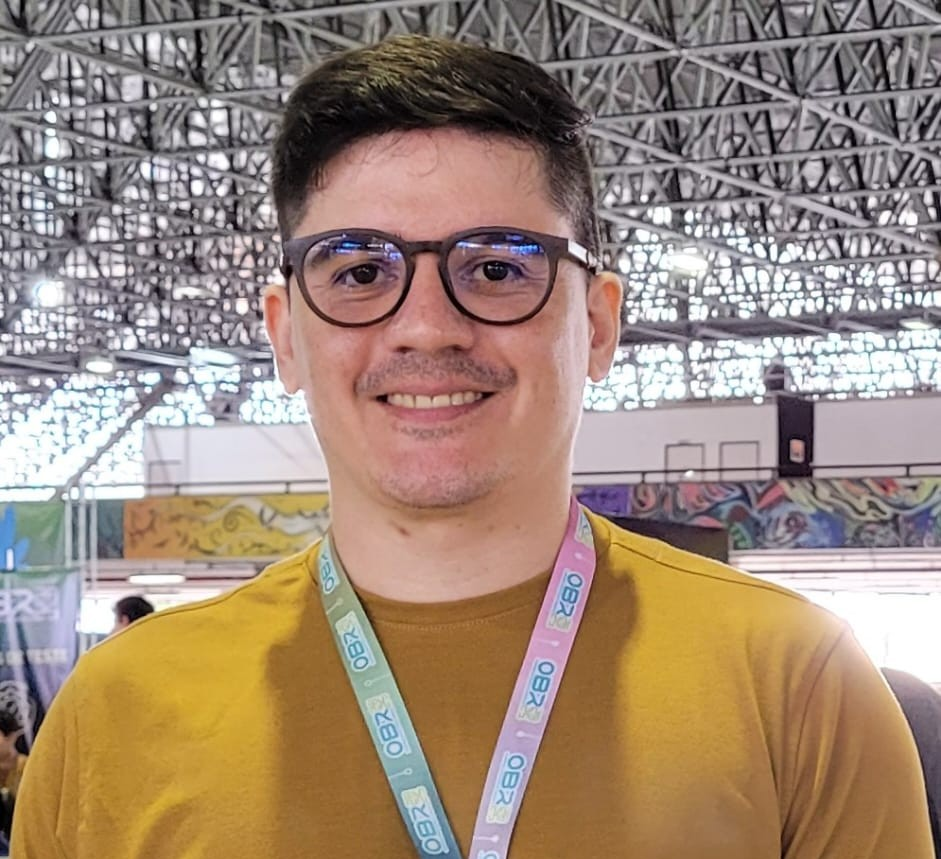

Fale Sobre Mim
Olá! Sou o professor Rafael, especialista em desenvolvimento de jogos. Tenho como missão guiar-te através dos motores de jogo e das lógicas que dão vida às experiências digitais.
Repositório de Slides
Aula 01: Intro ao Motor de Jogo
História dos motores, principais ferramentas (Unity, Unreal, Godot) e instalação.
Acessar SlidesAula 02: Lógica de Programação
Introdução a variáveis, funções e ciclos aplicados a comportamentos de NPCs.
Acessar SlidesProjetos Desenvolvidos

Space Shooter 2D
Um jogo desenvolvido em C# com padrões de design para otimização de performance.
Ver Projeto